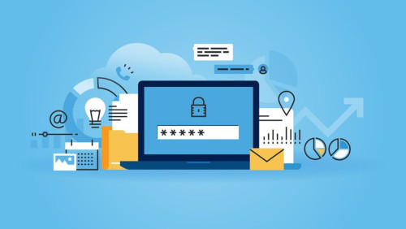

- O que é Segurança da Informação?
- Fundamentos da Segrança da Informação.
- Principais Tipos De Ataques Cibernéticos.
- Níveis de classificação da informação.
- Referências.
Indrodução a Segurança da Informação
O que é Segurança da Informação ? [Subir]
Segurança da informação envolve um conjunto de medidas que são necessárias para garantir a integridade, confiabilidade e a disponibilidade das informações de um indivíduo ou orgarnização, preservando a informação de acordo com as necessidades específicas.
Fundamentos da segurança da informação [Subir]
Confidencialidade
Uma boa estratégia de segurança da informação prevê garantir que as informações corporativas não serão acessadas e utilizadas por pessoas não autorizadas. Portanto, impõem limitações aos milhares de dados exclusivos e sigilosos que as empresas produzem em seu cotidiano operacional.
Sem esse princípio, as empresas ficam vulneráveis a espionagens industriais, roubos de informações confidenciais, prejuízos financeiros, utilização de dados e transações de seus clientes e até danos à imagem da marca.
Integridade
O princípio da integridade diz respeito à manutenção das condições em que as informações são produzidas e armazenadas. Em outras palavras: somente as pessoas devidamente autorizadas podem acessar e modificar os dados imputados nos sistemas. Ele prevê também as mudanças acidentais.
Disponibilidade
As informações corporativas devem estar sempre seguras e disponíveis para serem acessadas a qualquer momento pelos profissionais autorizados. Na hora de gerar um relatório para uma auditoria, por exemplo, os dados precisam ser facilmente encontrados e processados. Esse é o princípio da disponibilidade.
Principais Tipos De Ataques Cibernéticos [Subir]
Malware
Malware, ou “software malicioso,” é um termo mais amplo que descreve qualquer programa ou código malicioso que seja prejudicial aos sistemas.
Hostil, intrusivo e intencionalmente prejudicial, o malware invade, danifica ou desabilita computadores, sistemas de computador, redes, tablets e dispositivos móveis, geralmente assumindo o controle parcial das operações de um dispositivo. Assim como a gripe para os humanos, ele interfere no funcionamento normal.
Malware é uma maneira de ganhar dinheiro à sua custa de forma ilícita. Embora malware não possa danificar o hardware físico dos sistemas e equipamentos de rede (com uma exceção conhecida— consulte a seção Google Android abaixo), ele pode roubar, criptografar ou excluir seus dados, alterar ou sequestrar funções essenciais do computador e espionar a atividade de seu computador sem seu conhecimento ou permissão.
Phishing
Phishing é o crime de enganar as pessoas para que compartilhem informações confidenciais como senhas e número de cartões de crédito.
O phishing tem esse nome em referência à palavra fishing ou pescaria. Nesse tipo de ataque cibernético, os criminosos “jogam uma isca” para tentar fisgar um internauta que não percebe que está prestes a cair em uma armadilha.
Essas armadilhas chegam em forma de e-mails, mensagens de WhatsApp e outras muito convincentes que acabam por direcionar a sites maliciosos.
Ransomware
O ransomware é o “malware sequestrador”, aquele que sequestra dados sensíveis e pede resgate para devolvê-los.
O ransomware pode deixar a empresa inoperante por vários dias, o que prejudica toda sua operação. Para se proteger, além de boas ferramentas, é importante manter o ambiente atualizado e seguindo boas práticas de configuração.
Cavalo De Troia
O que é um Cavalo de Troia? Batizado com base na história do cavalo de madeira usado para convencer os defensores de Troia a trazer soldados sorrateiramente para a cidade, um Cavalo de Troia oculta um malware em um arquivo aparentemente normal. Há uma grande variedade de vírus Cavalo de Troia online, que podem executar inúmeras tarefas. A maioria dos Cavalos de Troia tem como objetivo controlar o computador de um usuário, roubando dados e inserindo outro malware no computador de suas vítimas.
Sniffer
Sniffer é um software que analisa e monitora o tráfego dentro de uma determinada rede (tudo o que entra ou sai de um computador). Sendo assim, ele captura e armazena os pacotes de dados.
Em outras palavras, ele “fareja” aquilo que passa pela rede. A ideia inicial é que ele não seja malicioso — uma vez que é utilizado para detectar problemas e melhorar o sistema, mantendo um fluxo eficiente
Níveis de classificação da informação. [Subir]
Público
Pode ser disponibilizado e acessível a qualquer pessoa.
Interno
Acessado apenas por colaboradores da empresa.
Confidencial
Acessível para um grupo de pessoas.
Restrito
Acessível apenas para pessoas selecionadas.